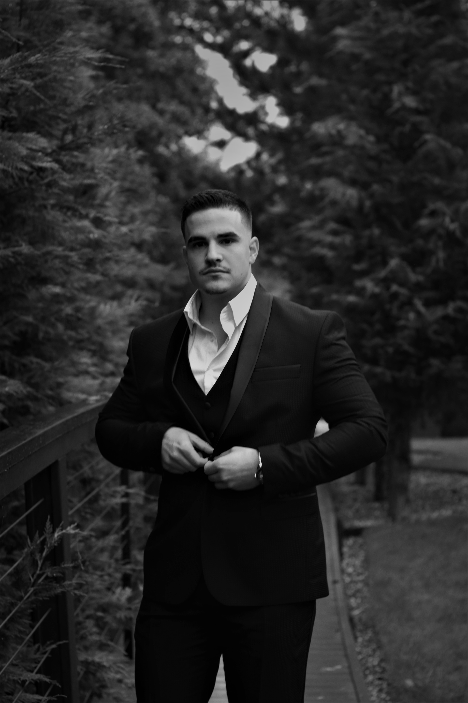

Moj linkedin:

Emin
Crnovrsanin
Student fakulteta za informacione tehnologije i sisteme
Ja sam Emin Crnovrsanin, student fakulteta za informacione tehnologije i sisteme, vec duzi niz godina se bavim programiranjem web sajtova za firme ali i za pojedince.